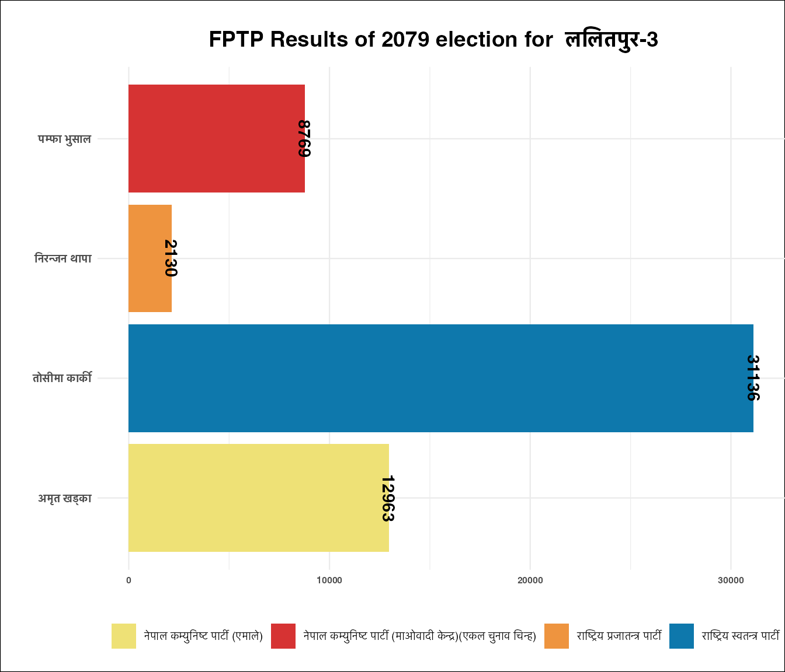
Diagnostic Analysis of Past Election Results
In this section we will analyse the electoral landscape of the Lalitpur - 3 based on past two election at federal, provincial and local level. It attempts diagnoses past election outcomes to understand how votes were distributed, transferred, and consolidated across parties and candidates. It establishes the empirical foundation upon which the strategic analysis in later sections is built.
FPTP - Federal Election
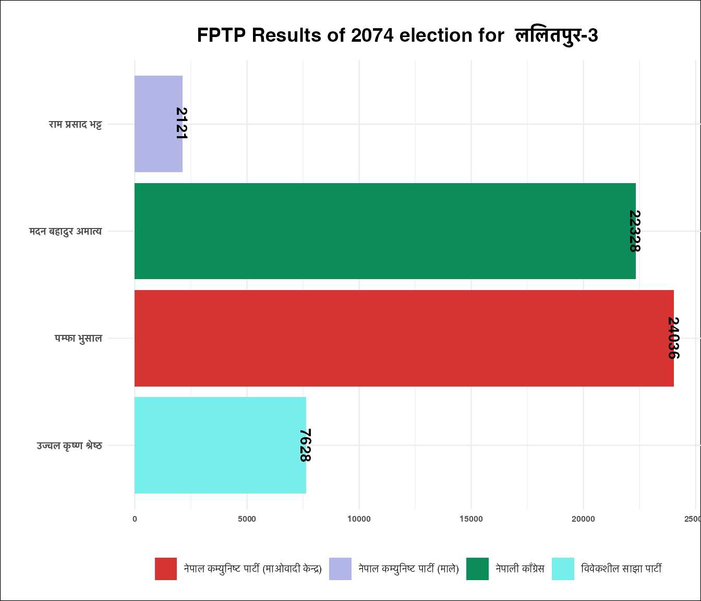
| क्रस | पार्टि | 2074 | 2079 |
|---|---|---|---|
| 1 | राष्ट्रिय स्वतन्त्र पार्टी | 0.0% | 53.5% |
| 2 | नेपाल कम्युनिष्ट पार्टी (एमाले) | 0.0% | 22.3% |
| 3 | नेपाल कम्युनिष्ट पार्टी (माओवादी केन्द्र)(एकल चुनाव चिन्ह) | 0.0% | 15.1% |
| 4 | राष्ट्रिय प्रजातन्त्र पार्टी | 0.0% | 3.7% |
| 5 | हाम्रो नेपाली पार्टी | 0.0% | 2.7% |
| 6 | एकीकृत राष्ट्रिय प्रजातन्त्र पार्टी(राष्ट्रवादी) | 1.2% | 0.0% |
| 7 | नयाँ शक्ति पार्टी नेपाल | 1.5% | 0.0% |
| 8 | नेपाल कम्युनिष्ट पार्टी (माओवादी केन्द्र) | 40.6% | 0.0% |
| 9 | नेपाल कम्युनिष्ट पार्टी (माले) | 3.6% | 0.0% |
| 10 | नेपाली काँग्रेस | 37.7% | 0.0% |
| 11 | विवेकशील साझा पार्टी | 12.9% | 0.0% |
| 12 | संघीय समाजवादी फोरम नेपाल | 1.1% | 0.0% |
Observation : Making sense of electoral win of Ms Toshima Karki
Bibeksheel Sajha managed to get 12.9% vote in the election of 2074. This in intself is an indication of demand for newer face in the constituency !
NC, which was a significant political force, opted to support CPN-Moaist candidate in the election.
Beside other obvious and immediate political circumstances, above two reasons provided an impetus to RSP resulting a big margin of victory, which otherwise, could have been a tight race.
Voter Base of Major Political Parties
Compare PR and FPTP votes of 2079 election
Observation
The diffence in votes (PR Vs FPTP) for RSP is highest. Ms Karki recieved ~27% more votes in FPTP than RSP recieved in the PR. This substantiates the initial claim made earlier about possible swing votes from NC supports shifting to RSP in FPTP election.
UML’s vote share of 22.72% in FPTP and 20.44% in PR seems linear, hence can be argued that UML didnt undperform in the fptp election.
Similarly, Maoist got 5% more vote in FPTP than in PR - we can presume that at least 50% of such votes that it got in FPTP (~4000) should be from NC supporters. While the alliance failed miserably in terms of transfering vote from NC to Maoist, the performance of Maoist should be considered okayis and not bad in the elction of fptp.
It is evident that the significant portion of ~14% vote that NC recieved in FPTP got transferred to RSP in FPTP along with 10% votes of RPP and additional 7% recieved by parties in PR election who had no representation in FPTP.
At least 35% voters with leftist inclination
Candidate selections from NC and RPP will largely determine what happens with RSP or any similar forces in this constituency.
| क्रस | पार्टि | समानुपातिक मत | समानुपातिक-% | उमेद्वार | प्रत्यक्ष मत | प्रत्यक्ष मत-% |
|---|---|---|---|---|---|---|
| 1 | राष्ट्रिय स्वतन्त्र पार्टी | 16650 | 27.68 | तोसीमा कार्की | 31136 | 54.57 |
| 2 | नेपाल कम्युनिष्ट पार्टी (एमाले) | 12297 | 20.44 | अमृत खड्का | 12963 | 22.72 |
| 3 | नेपाल कम्युनिष्ट पार्टी (माओवादी केन्द्र)(एकल चुनाव चिन्ह) | 6531 | 10.86 | पम्फा भुसाल | 8769 | 15.37 |
| 4 | राष्ट्रिय प्रजातन्त्र पार्टी | 8789 | 14.61 | निरन्जन थापा | 2130 | 3.73 |
| 5 | हाम्रो नेपाली पार्टी | 1575 | 2.62 | राजा राम तण्डुकार | 1554 | 2.72 |
| 6 | नेपाल मजदुर किसान पार्टी | 1658 | 2.76 | निरज लवजू | 503 | 0.88 |
| 7 | नेपाली काँग्रेस | 8247 | 13.71 | NA | NA | NA |
| 8 | नेपाल कम्युनिष्ट पार्टी (एकीकृत समाजवादी) | 1229 | 2.04 | NA | NA | NA |
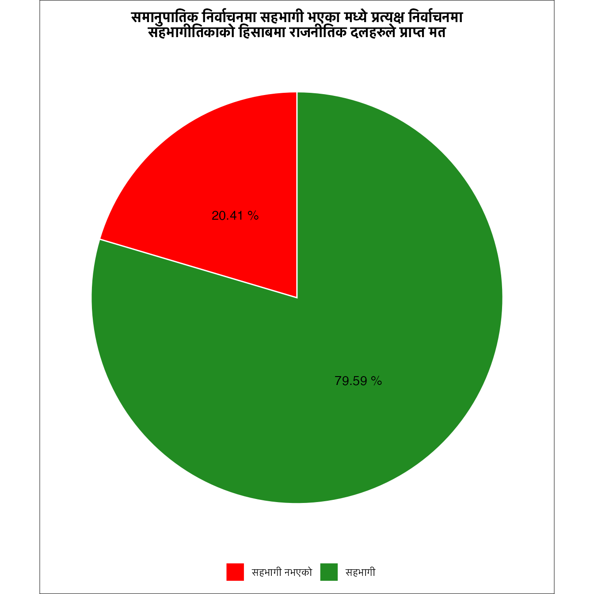
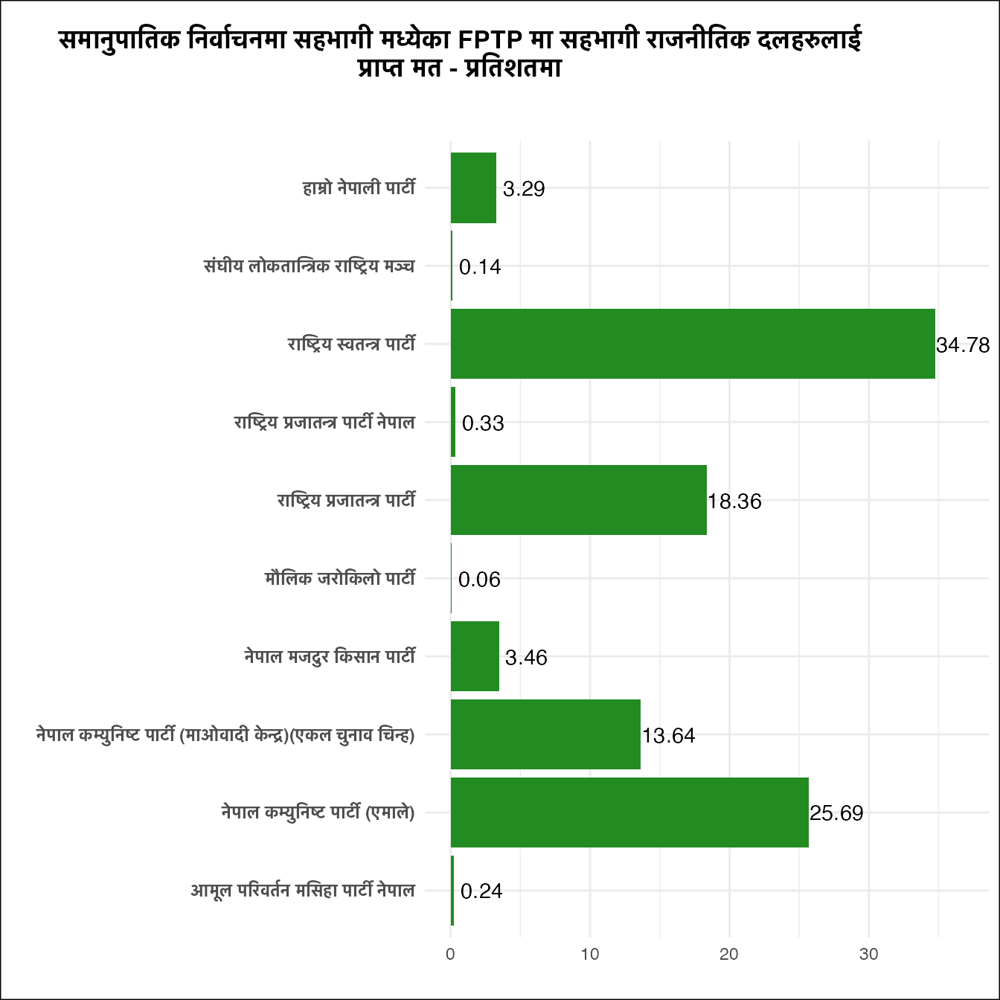
20% voters were seemingly unrepresented in the FPTP
Figure 3 shows that 20.41% of voters, who voted in the PR, had no representation in the election of FPTP (including NC voters). Who did these voters vote in the FPTP ?
Figure 4 shows proportion of votes recieved (in PR election) by parties who were represented in FPTP (minus the 20.41%).
The vote recieved by the RSP in PR could be seen as something like a brand value of the party. In this context Ms Toshima Karki over performed party reputation by around 19.3%. This could be because of cross-party appeal, weak opposition cordination etc.
Simalarly, in case of candidate of Maoist (who was supported by NC), Ms Bhusal clearly underperfomed than combined reputation of NC and Maoist. The clear reason being vote didnt transfer cleanly!
Estimating voter base of major Political party from local elections - 2079
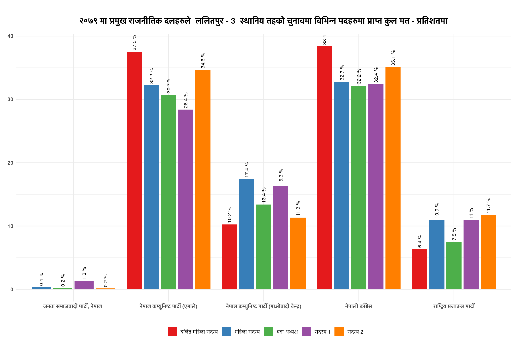
The local election is a loose but a evidence driven indicator of voter landscape for legacy political parties. It can also be used to serve to analyse indicative ideological inclination of voters at large.
Figure 5 suggests a clear left inclined constituency with right wing and centerist or center to left party as strong contendors. Furthermore,
The average vote recieved by the parties at ward level is also in line with the vote received by parties in the FPTP electin of 2074 as shown in Table 1.
This further supports the claim that the left vote has more or less tranfered to FPTP (though distributed among left parties) and also that the CPN UML’s electoral performance of FPTP in 2079 should be considered satisfactory.
Lets see if the pattern holds for the election of 2074
Figure 6 below has results from the local election of 2074. What is consistent is the proportion of left-wing votes !. Also the vote share among major political party at local level seem to have remained constant.
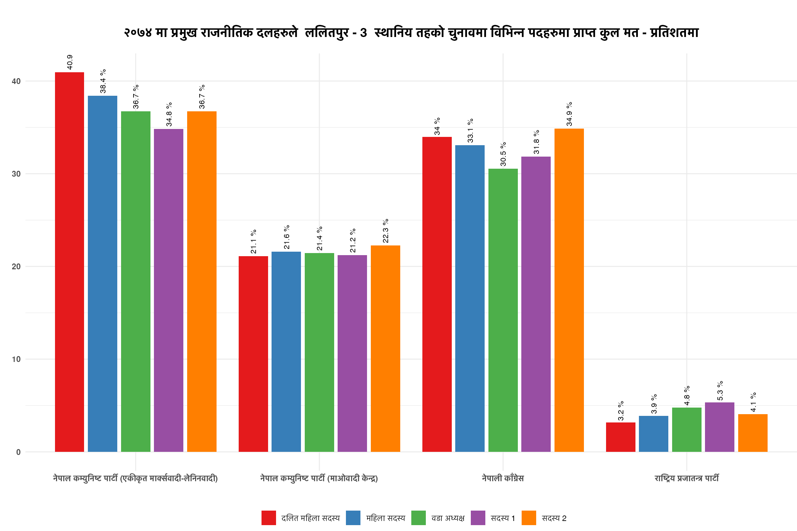
Electoral Opportunity & Strategic Landscape - Direction for the way ahead !
This section provides a strategic reading of the constituency’s electoral landscape, focusing on where political competition exists and where it does not. Instead of treating the constituency as a single homogeneous unit, the analysis breaks it down ward-by-ward to assess fragmentation, competitiveness, and voter volatility.
The indicators presented here—ENP, MoV, ILV, and the Composite Index—are designed to answer three practical campaign questions:
- Where are voters most open to alternatives?
- Where are margins narrow enough to realistically flip?
- Where does volatility suggest weak party consolidation?
The output is a clear prioritisation of wards, enabling evidence-based campaign planning rather than intuition-driven targeting.
ENP - Effective Number of Parties
Concept
ENP measures party fragmentation — how many parties are effectively competing in a constituency, weighted by their vote share.
Low ENP → few dominant parties
High ENP → many parties with similar vote shares
Strategic Value
Comparative Evaluation of general party fragmentation among other constituency or at ward level.
Prepare ward-level strategy
Wards with high ENP suggests marginal or small disruption creates a greater impact for new entrants – Non polarised voter signals opportunity for new ideas and ppl.
Ward with low ENP : Strategise based on people’s percieved grievances against establashed dominant parties.
Identify wards or segments of wards (such as provincial constituency) with high ENP that gives a good entry point for new entrants
Uniform political campaign strategy for groups of wards (as categories in Table 4)
ENP - At Federal Level
| Year | ENP | Total Parties | Dominant Party | Total Vote Cast |
|---|---|---|---|---|
| 2079 | 2.77 | 20 | राष्ट्रिय स्वतन्त्र पार्टी | 58145 |
| 2074 | 3.07 | 13 | नेपाल कम्युनिष्ट पार्टी (माओवादी केन्द्र) | 59214 |
Observation
The ENP at 2.77 is low suggesting 2 big player and one small player. In absence of NC’s candidate, the low value seems natural with the margin RSP candidate has won.
Three political party: RSP, CPN-UML and Maoist (Ignoring NC would be a mistake !)
Non-legacy party as common denominator in both election: RSP in 2079 and Bibeksheel in 2074, one won and the other was third largest force.
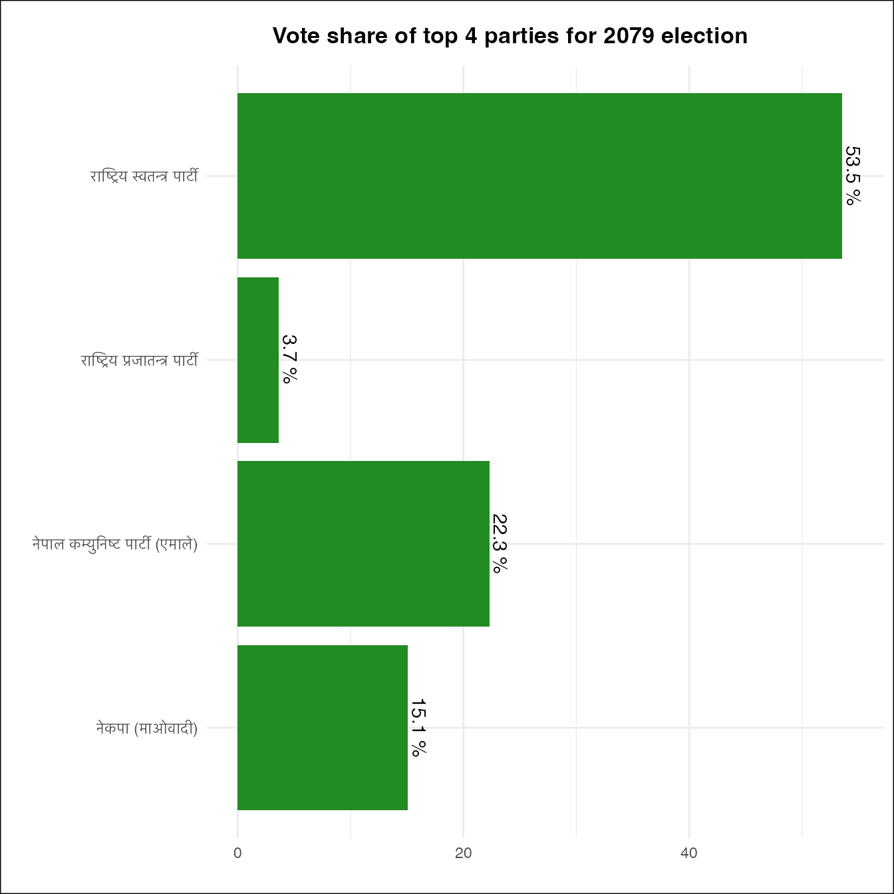
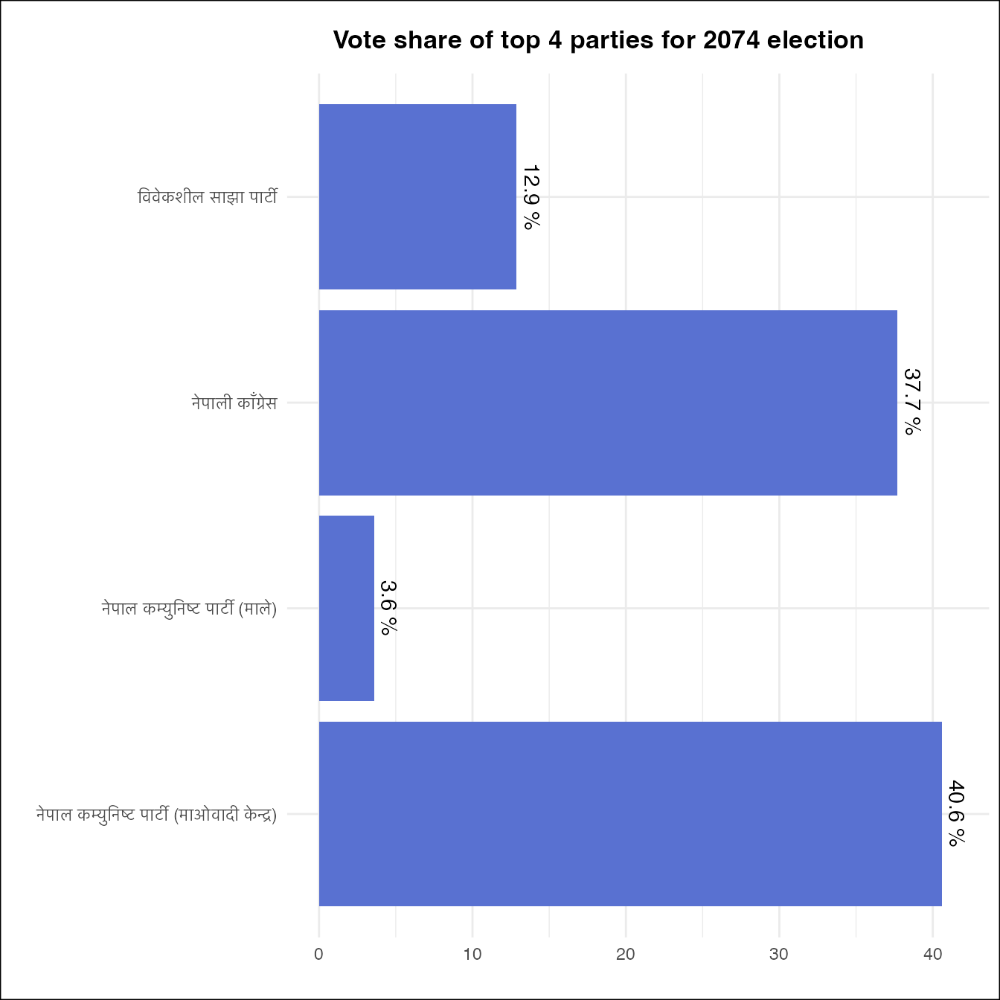
ENP - at Provincial Level
Observation
- Rise on ENP in Provincial Constituency -क from 2.93 to 4.12 : Vote Fragmented among legacy parties shows increasing confusion among voter and hence Prioritise Constituency (क). Also higher vote share at large
- Provincisl Constituency - ख has remained largely stable in terms of total number of political actors invovled.
- Also, to be noted that there is rise of ENP in constituency (ख) in 2079 from 2074 -> competative opening !
| Year | Province Constituency | ENP | Total Parties | Dominant Party | Total Vote Cast |
|---|---|---|---|---|---|
| 2079 | क | 4.12 | 11 | नेपाल कम्युनिष्ट पार्टी (एमाले) | 31545 |
| 2079 | ख | 3.69 | 9 | नेपाल कम्युनिष्ट पार्टी (एमाले) | 27755 |
| 2074 | क | 2.93 | 11 | नेपाल कम्युनिष्ट पार्टी (माओवादी केन्द्र) | 31213 |
| 2074 | ख | 3.15 | 12 | नेपाल कम्युनिष्ट पार्टी (एमाले) | 27037 |
Lets look into top 4 parties for both constituency over two provincial election
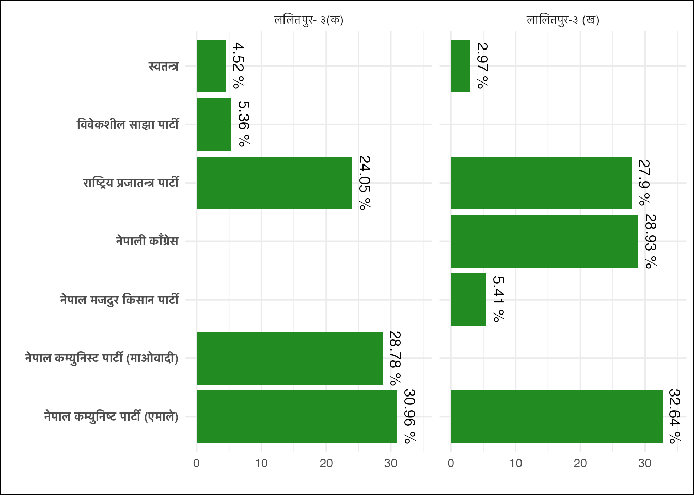
Observation
RaPraPa is on rise ! from very insignificant presence in 2074 (see Figure 9)
In comparision to the Provincial FPTP, RaPraPa’s performance in the federal FPTP is abysmal – further suggesting vote transfer from RaPraPa to RSP.
Even at provincial level, non-legacy force (Bibeksheel and indepedent candidates) have a significant voice at 10% !
The chart further suggest the reality that Lalitpur-3 is a left heavy constituency (in terms of party penetration among voters from legacy left leaning forces).
Observation
Strong and signficant presence of Bibeksheel Party (ranked 3rd in both provincial constituency) : suggesting a gathering storm !
Vote share of NC has remained relatively constant.
From 2074 to 2079 the significant rise of vote share of RaPraPa seems to suggest possible swing voters from left leaning parties to RaPraPa (which is interesting !)
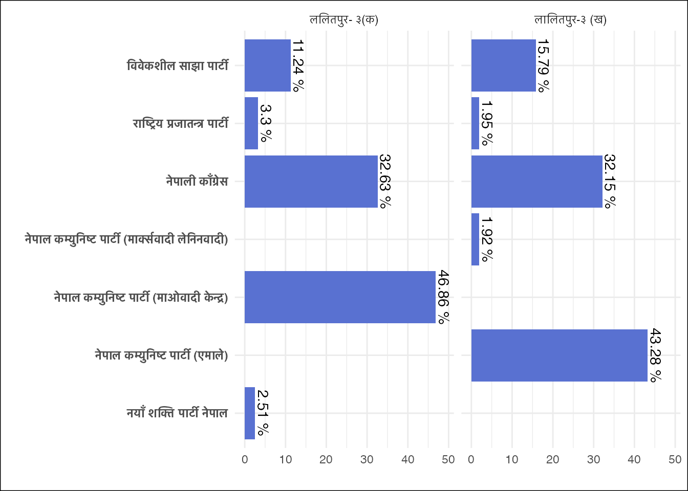
ENP - Local Level
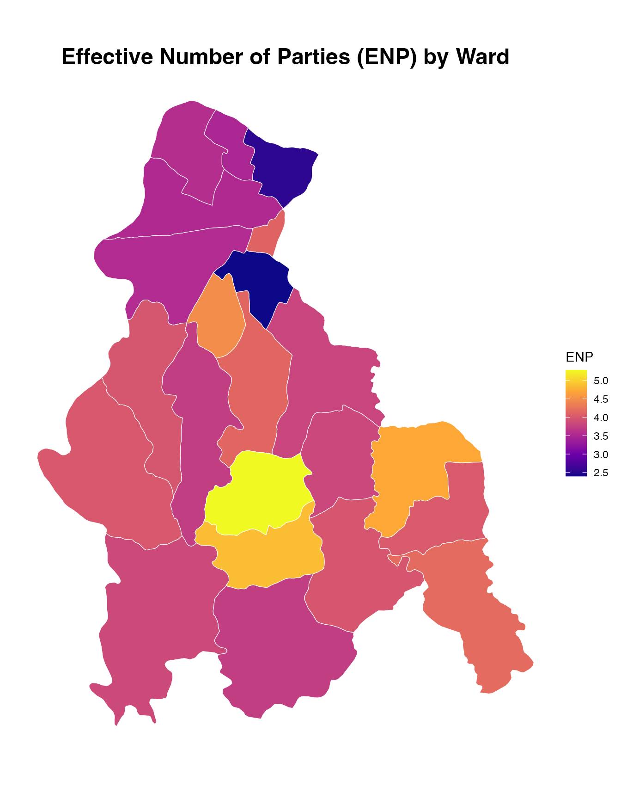
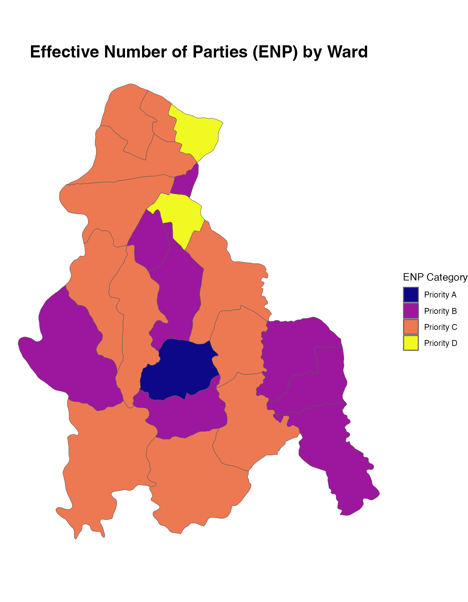
Maps above (Figure 10) has ENP values derived from local elections for each ward; it ranges from 2.5 to 5.8. Higher ENP suggests higher voter fragmentation (means major party has no stronghold and/or consolidated) and lower ENP suggests voter consoldiation and lower voter fragmentation (anything lower than 2.5 is effectively a bipolar race).
Based on the ENP values Figure 11 illustrates a priority category for the new party. Below Table 4 provides list of wards based on cateogory of prioritisation. [please note that Priority 1 in this report suggests wards that should be considered the favourable condition for the new entrants]
| category | name |
|---|---|
| Priority A | ललितपुर-26 |
| Priority B | ललितपुर-13,ललितपुर-14,ललितपुर-20,ललितपुर-21,ललितपुर-27,ललितपुर-28,ललितपुर-29,गोदावरी-14 |
| Priority C | ललितपुर-1,ललितपुर-15,ललितपुर-18,ललितपुर-2,ललितपुर-22,ललितपुर-23,ललितपुर-24,ललितपुर-25,ललितपुर-3,ललितपुर-4,गोदावरी-12 |
| Priority D | ललितपुर-10,ललितपुर-5 |
Indicator II : Margin of Victory (MoV)
Concept
MoV reflects competitiveness. It is calcuated as a differece (in percentage point of vote share) between the winner and runner-up (rank 1 and 2).
Smaller MoV -> Higher chances of contestability or voters are tightly divided
Larger MoV -> Strong dominance by a single party or voters significantly more inclined towards a dominant party.
Strategic Value
The federal MoV, at prime facie, a measure how tightly the constituency is contested with. Lower MoV value is a favourable condition, at large, for the new entrants
Identify segments of wards or invidiual wards with similar traits to formulate similar plans :
- For example in wards with Lower MoV: Higher chances of contestability
- In case of ward with higher MoV: suggests strong dominance by a single party and hence the startegy could be combination of anti-incumbency agendas along with other relevant measures based on the dominant party.
Margin of Victory - federal level
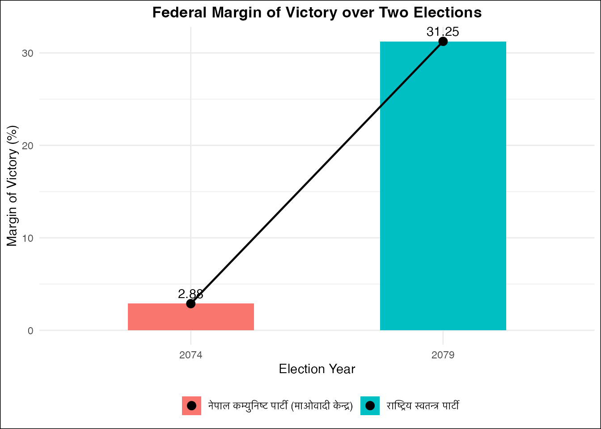
The margin of victor (MoV) for the federal fptp election increased to 31.25% from 2.88%. However, it is to be noted that, this alone shouldnt determine the competitiveness of the the constituency provided special cricumstances as explained in segments above. And RSP is yet to consolidate voters from its initial run !
MoV - provincial level
Observation
The winning margin (MoV) has decreased in both the constituency.
This decrease in MoV in both constituency suggests lack voter consolidation and is vulnerable !
To be noted the vote share for each constituency as follow:
| Constituency | year | MoV | totalVote | voteShare |
|---|---|---|---|---|
| क | 2074 | 14.23 | 31213 | 53.58 |
| ख | 2074 | 11.13 | 27037 | 46.42 |
| क | 2079 | 2.17 | 31545 | 53.20 |
| ख | 2079 | 3.70 | 27755 | 46.80 |
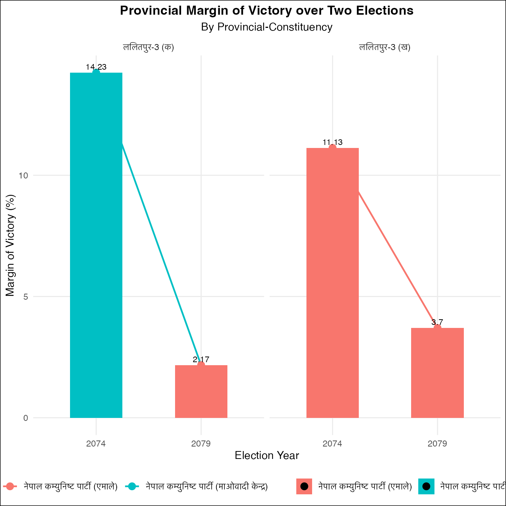
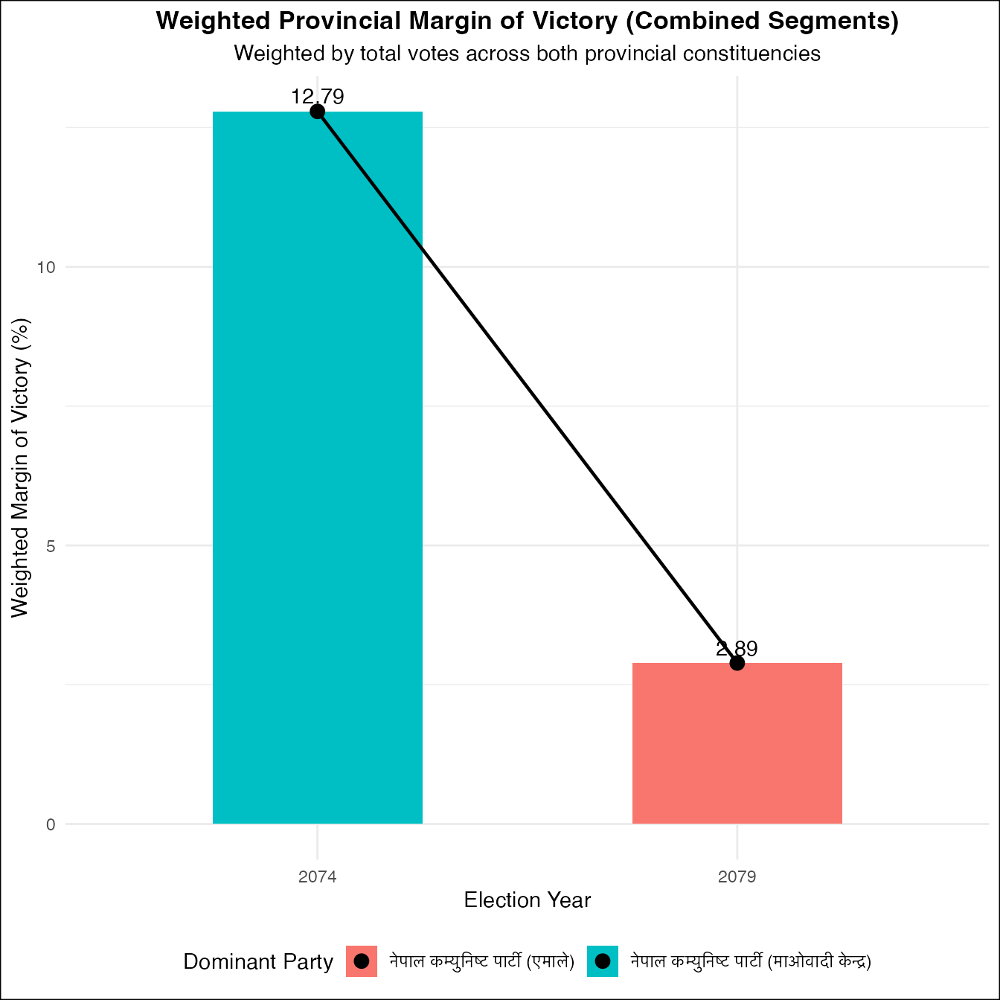
Observation
- Based on weighted Provincial MoV CPN (Maoist) seem to have lost the edge to the CPN UML as the most dominant party in the provincial fptp election. While the MoV has decreased the win for CPN-UML is that it has established itself as a dominant party in the constituency (lalitpur-3) based on fptp performance.
MoV - Local Level
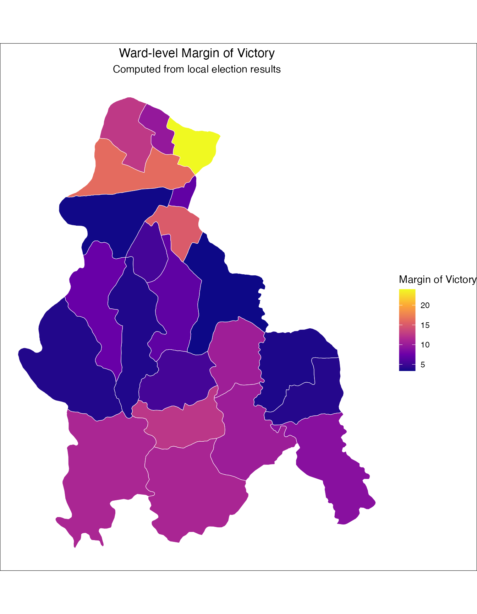
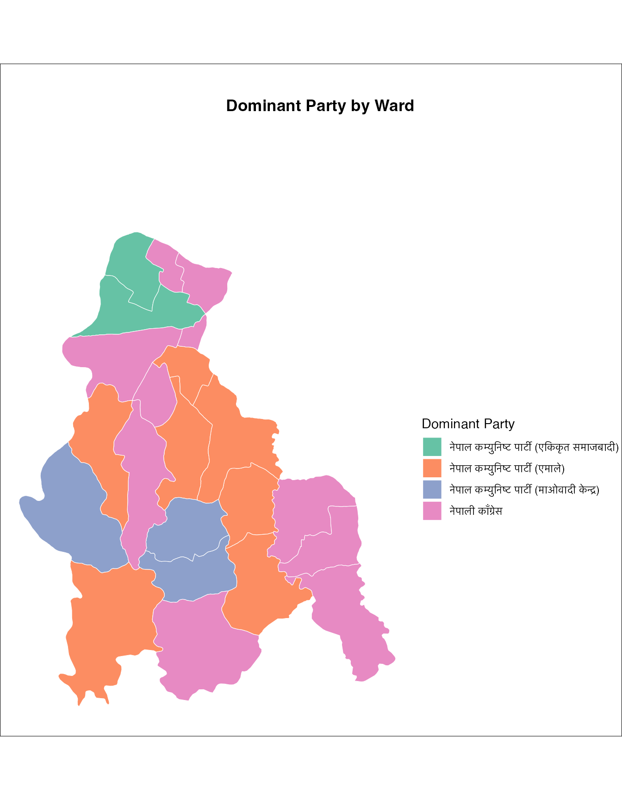
Observation
- The Margin of Victory (on percent points) among the wards (based on local election) varies from 3.36% to 24.02%.
- Based on analysis of dominant parties, we can presume, at ward level, the constituency is left-leaning ! This is also supported by ENP value at federal level where Nepali CPN-Maoist and CPN-EML form top 4 political force in the region.
We compute dominant party within any ward not based on who wins the ward chair but by taking consideration all 5 seats of the wards. Also to be noted concept of dominant party reflects individual party’s ward level penetration and orginisational strength if anything.
Next, in Figure 14 we try to categorise ward based on pre defined cut off values to set priority for wards:
- Priority A → MoV less than 5%
- Priority B → MoV from 5% to 10%
- Priority C → MoV from 10% to 15%
- Priority D → MoV 15% and more
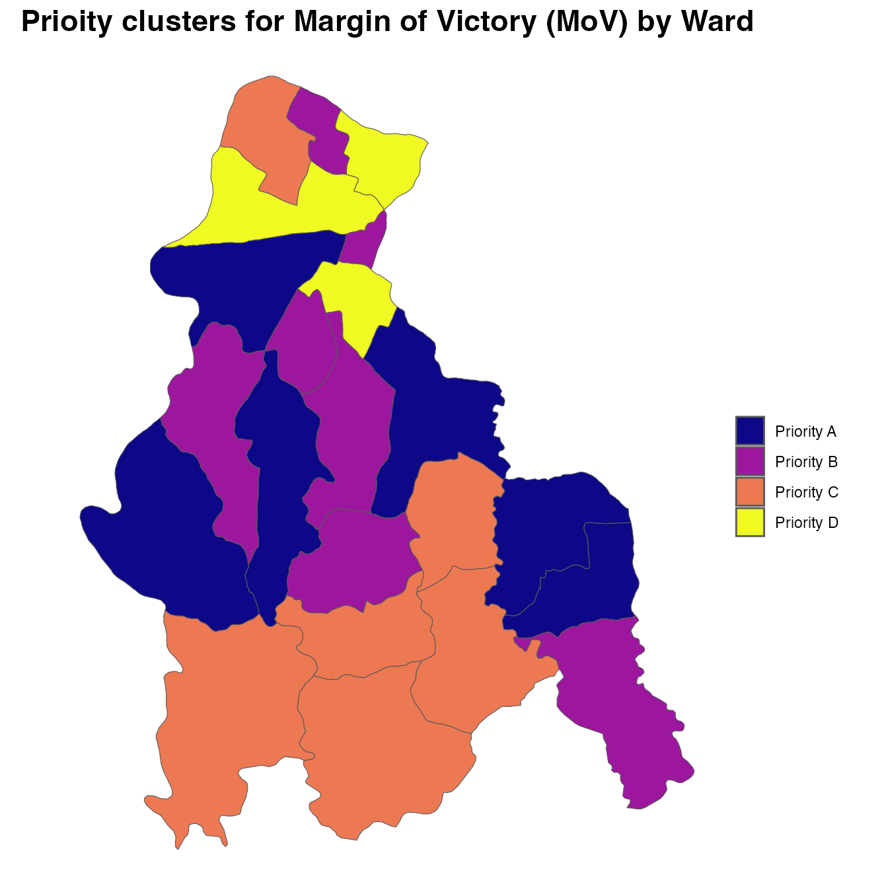
| category | wards |
|---|---|
| Priority A | ललितपुर-15, ललितपुर-21, ललितपुर-25, ललितपुर-28, ललितपुर-29, ललितपुर-4 |
| Priority B | ललितपुर-1, ललितपुर-13, ललितपुर-14, ललितपुर-18, ललितपुर-20, ललितपुर-26, गोदावरी-14 |
| Priority C | ललितपुर-2, ललितपुर-22, ललितपुर-23, ललितपुर-24, ललितपुर-27, गोदावरी-12 |
| Priority D | ललितपुर-10, ललितपुर-3, ललितपुर-5 |
MoV under microscope - Intra-Local Volatality (ILV)
Concept
ILV measures how much voter preference fluctuates within a ward across elections.
Higher ILV → Suggests higher fluctuation Lower ILV → Suggest lower flucturation
Strategic Value
ILV is a measure of spread of MoV values within each ward. Generally, higher ILV (higher flactuation) provides strategic advantage for new political options as voters have not consolidated to any political force.
ILV along with MoV (for each ward) can be used to identify individual wards with strategic values and formulate campaigns plans accordingly.
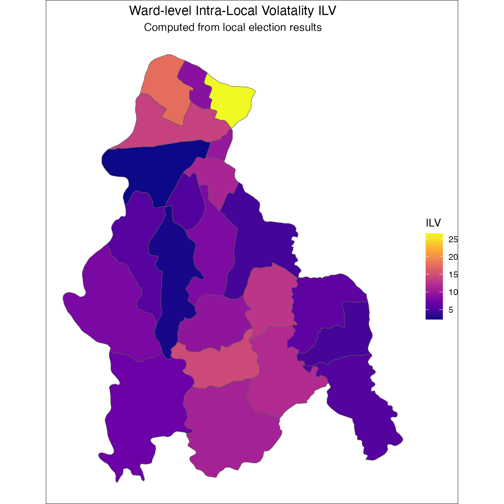
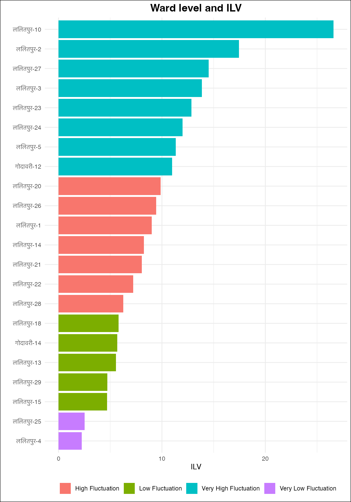
Winnability Index (Composite Index of ILV and MoV)
The winnability Index is a composite index of ILV and MoV that are combined to provide a single actionable indicator.
The first set of figures below (Figure 17 and Figure 18) categories wards based on absolute value of composite index. In this case, there are 4 wards that are categoriesed as top up-for-grabs for new political party.
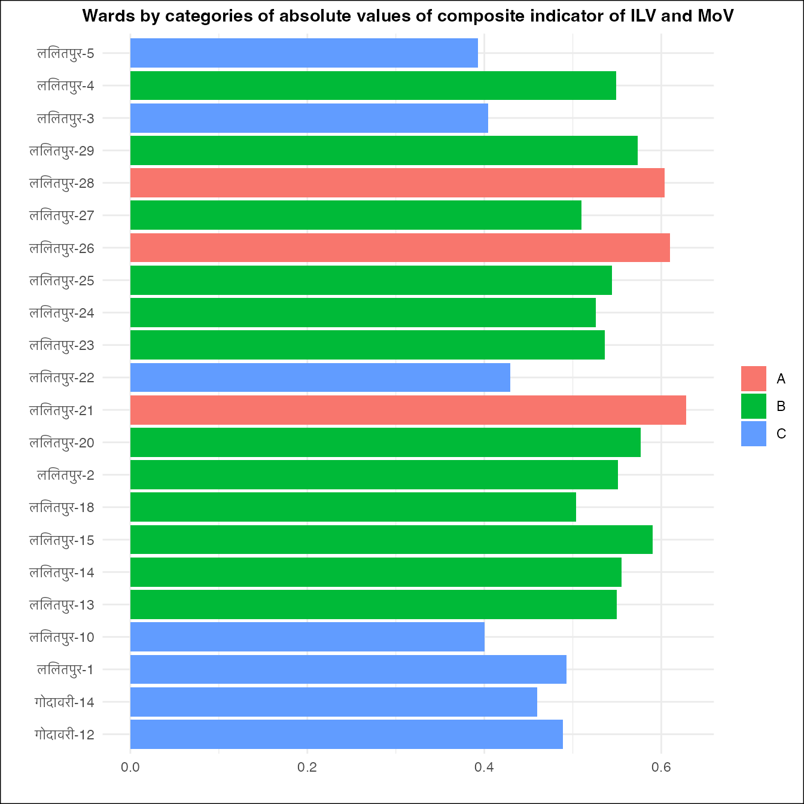
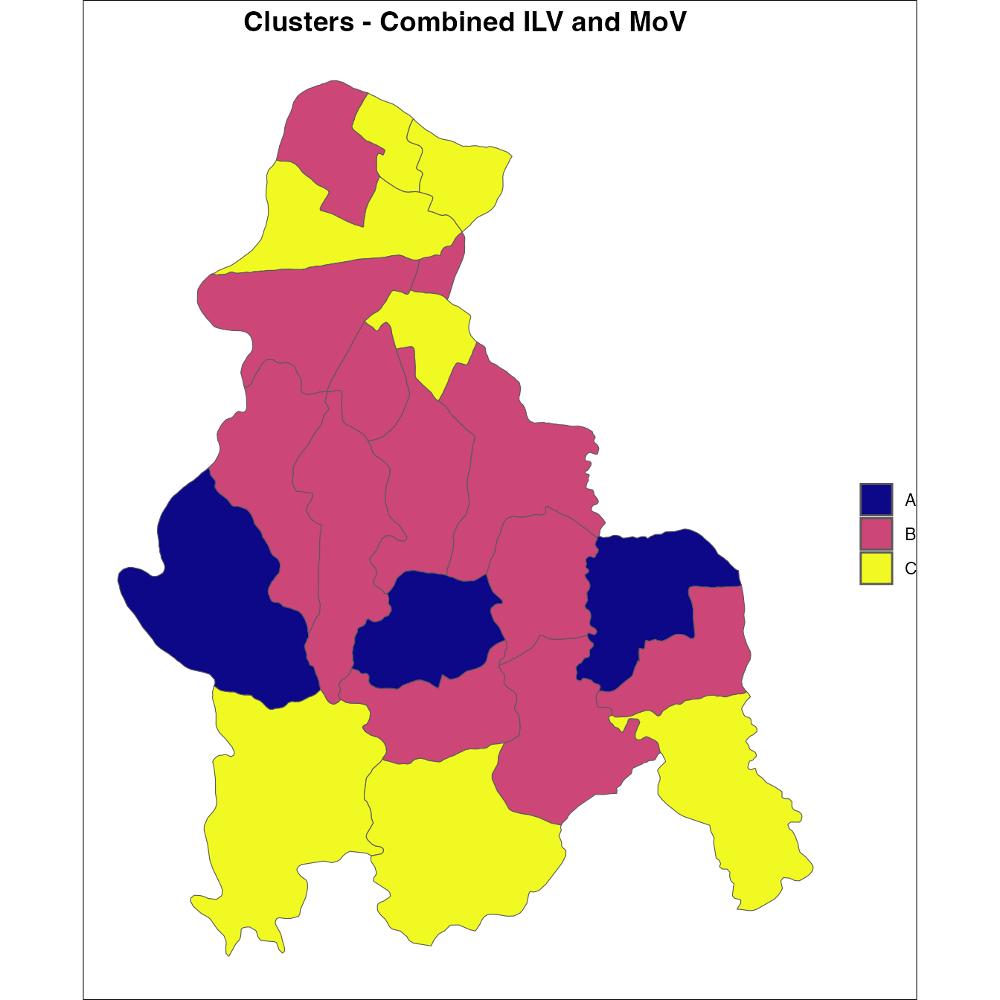
Priority list of wards based on composite Index of ILV and MoV
Follwing charts (Figure 19 and Table 6) provides priority categories of wards based on Winnability Index. The four categories are based on the rank of the index computed and therefore it has equal number of wards in each categories.
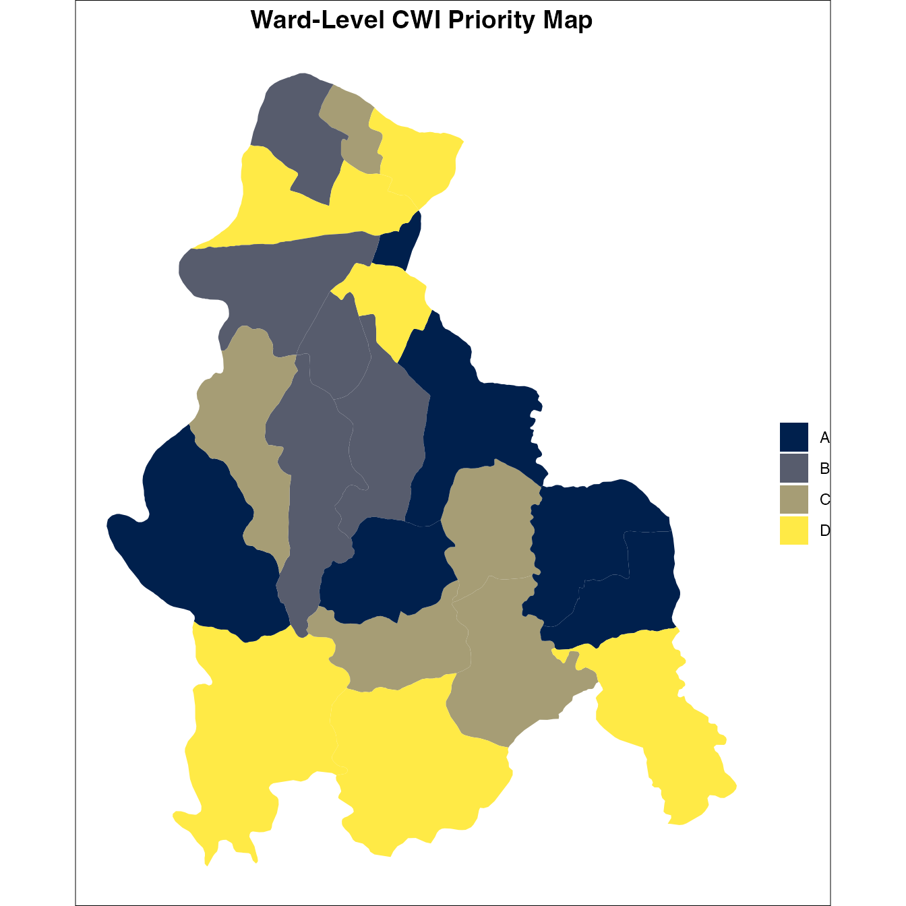
| Category | wards |
|---|---|
| Priority- A | ललितपुर-15, ललितपुर-20, ललितपुर-21, ललितपुर-26, ललितपुर-28, ललितपुर-29 |
| Priority- B | ललितपुर-13, ललितपुर-14, ललितपुर-2, ललितपुर-25, ललितपुर-4 |
| Priority- C | ललितपुर-1, ललितपुर-18, ललितपुर-23, ललितपुर-24, ललितपुर-27 |
| Priority- D | ललितपुर-10, ललितपुर-22, ललितपुर-3, ललितपुर-5, गोदावरी-12, गोदावरी-14 |
Ward-Level KPI Table: ILV, MoV & Composite Indicator
This table provides a ward-by-ward summary of electoral dynamics.
| NC Strategic Ward Management | |||||||||
| Reversed Priority: Core Strongholds (A) vs. Expansion Targets (D) | |||||||||
| Ward | Current Dominant | ENP | MoV | ILV | Risk Index | NC Priority Class | Total Voters | NC vote % | NC Total Votes |
|---|---|---|---|---|---|---|---|---|---|
| ललितपुर-1 | नेपाली काँग्रेस | 3.49 | 9.74 | 9.01 | 0.48 | A: Core Stronghold | 2.85% | 50.97% | 655 |
| ललितपुर-10 | नेपाली काँग्रेस | 2.53 | 24.02 | 26.59 | 0.21 | A: Core Stronghold | 2.89% | 83.44% | 942 |
| ललितपुर-22 | नेपाल कम्युनिष्ट पार्टी (एमाले) | 3.85 | 11.17 | 7.22 | 0.48 | A: Core Stronghold | 5.00% | 33.68% | 1,015 |
| ललितपुर-3 | नेपाल कम्युनिष्ट पार्टी (एकिकृत समाजबादी) | 3.54 | 16.16 | 13.86 | 0.39 | A: Core Stronghold | 5.76% | 34.30% | 759 |
| ललितपुर-5 | नेपाल कम्युनिष्ट पार्टी (एमाले) | 2.40 | 15.07 | 11.34 | 0.27 | A: Core Stronghold | 3.17% | 40.66% | 664 |
| गोदावरी-12 | नेपाली काँग्रेस | 3.74 | 11.11 | 10.99 | 0.49 | A: Core Stronghold | 7.19% | 51.73% | 2,169 |
| ललितपुर-18 | नेपाल कम्युनिष्ट पार्टी (एमाले) | 3.98 | 7.38 | 5.82 | 0.56 | B: Lean Stronghold | 3.92% | 31.44% | 636 |
| ललितपुर-2 | नेपाल कम्युनिष्ट पार्टी (एकिकृत समाजबादी) | 3.59 | 12.61 | 17.45 | 0.50 | B: Lean Stronghold | 6.01% | 28.59% | 694 |
| ललितपुर-23 | नेपाल कम्युनिष्ट पार्टी (एमाले) | 3.83 | 10.39 | 12.85 | 0.53 | B: Lean Stronghold | 3.35% | 31.72% | 477 |
| ललितपुर-24 | नेपाल कम्युनिष्ट पार्टी (एमाले) | 3.98 | 10.26 | 11.99 | 0.54 | B: Lean Stronghold | 4.20% | 26.44% | 681 |
| गोदावरी-14 | नेपाली काँग्रेस | 4.19 | 9.02 | 5.67 | 0.54 | B: Lean Stronghold | 4.71% | 41.88% | 1,249 |
| ललितपुर-14 | नेपाल कम्युनिष्ट पार्टी (एमाले) | 4.14 | 6.86 | 8.26 | 0.61 | C: Lean Opportunity | 7.55% | 39.80% | 1,104 |
| ललितपुर-20 | नेपाली काँग्रेस | 4.12 | 6.97 | 9.87 | 0.61 | C: Lean Opportunity | 6.08% | 61.10% | 1,294 |
| ललितपुर-25 | नेपाली काँग्रेस | 3.74 | 3.85 | 2.53 | 0.58 | C: Lean Opportunity | 4.62% | 42.58% | 956 |
| ललितपुर-27 | नेपाल कम्युनिष्ट पार्टी (माओवादी केन्द्र) | 4.86 | 12.42 | 14.51 | 0.61 | C: Lean Opportunity | 3.11% | 9.38% | 180 |
| ललितपुर-4 | नेपाली काँग्रेस | 3.56 | 3.45 | 2.24 | 0.57 | C: Lean Opportunity | 6.22% | 42.52% | 1,342 |
| ललितपुर-13 | नेपाली काँग्रेस | 4.48 | 5.45 | 5.56 | 0.65 | D: Expansion Target | 4.99% | 35.51% | 849 |
| ललितपुर-15 | नेपाल कम्युनिष्ट पार्टी (एमाले) | 3.80 | 3.36 | 4.70 | 0.62 | D: Expansion Target | 5.83% | 46.89% | 987 |
| ललितपुर-21 | नेपाल कम्युनिष्ट पार्टी (माओवादी केन्द्र) | 4.00 | 3.91 | 8.06 | 0.65 | D: Expansion Target | 4.15% | 16.20% | 500 |
| ललितपुर-26 | नेपाल कम्युनिष्ट पार्टी (माओवादी केन्द्र) | 5.28 | 5.45 | 9.44 | 0.76 | D: Expansion Target | 2.87% | 33.75% | 536 |
| ललितपुर-28 | नेपाली काँग्रेस | 4.71 | 3.76 | 6.27 | 0.72 | D: Expansion Target | 3.56% | 33.97% | 675 |
| ललितपुर-29 | नेपाली काँग्रेस | 4.02 | 4.02 | 4.72 | 0.63 | D: Expansion Target | 1.97% | 56.12% | 422 |
| 2026 Election: NC Strategic Defense Dashboard | |||||||
| Prioritizing Voter Retention and Fragile Strongholds | |||||||
| Ward | Current Lead | Action Status | Safety Margin % | Votes to Secure | NC Share | ENP_raw | Base Votes |
|---|---|---|---|---|---|---|---|
| ललितपुर-20 | नेपाली काँग्रेस | CRITICAL: Under-threat | −2.90 | 61 | 61.1% | 4.12 | 1,294 |
| ललितपुर-28 | नेपाली काँग्रेस | CRITICAL: Under-threat | −2.51 | 50 | 34.0% | 4.71 | 675 |
| ललितपुर-10 | नेपाली काँग्रेस | CRITICAL: Under-threat | −2.56 | 29 | 83.4% | 2.53 | 942 |
| ललितपुर-29 | नेपाली काँग्रेस | CRITICAL: Under-threat | −0.70 | 5 | 56.1% | 4.02 | 422 |
| ललितपुर-13 | नेपाली काँग्रेस | CRITICAL: Under-threat | −0.11 | 3 | 35.5% | 4.48 | 849 |
| ललितपुर-2 | नेपाल कम्युनिष्ट पार्टी (एकिकृत समाजबादी) | Observe | −4.83 | 0 | 28.6% | 3.59 | 694 |
| ललितपुर-21 | नेपाल कम्युनिष्ट पार्टी (माओवादी केन्द्र) | Observe | −4.15 | 0 | 16.2% | 4.00 | 500 |
| ललितपुर-26 | नेपाल कम्युनिष्ट पार्टी (माओवादी केन्द्र) | Observe | −3.99 | 0 | 33.8% | 5.28 | 536 |
| ललितपुर-23 | नेपाल कम्युनिष्ट पार्टी (एमाले) | Observe | −2.46 | 0 | 31.7% | 3.83 | 477 |
| ललितपुर-27 | नेपाल कम्युनिष्ट पार्टी (माओवादी केन्द्र) | Observe | −2.10 | 0 | 9.4% | 4.86 | 180 |
| ललितपुर-24 | नेपाल कम्युनिष्ट पार्टी (एमाले) | Observe | −1.73 | 0 | 26.4% | 3.98 | 681 |
| ललितपुर-14 | नेपाल कम्युनिष्ट पार्टी (एमाले) | Observe | −1.39 | 0 | 39.8% | 4.14 | 1,104 |
| ललितपुर-15 | नेपाल कम्युनिष्ट पार्टी (एमाले) | Observe | −1.33 | 0 | 46.9% | 3.80 | 987 |
| गोदावरी-12 | नेपाली काँग्रेस | STABLE: Stronghold | 0.11 | 0 | 51.7% | 3.74 | 2,169 |
| ललितपुर-1 | नेपाली काँग्रेस | STABLE: Stronghold | 0.73 | 0 | 51.0% | 3.49 | 655 |
| ललितपुर-4 | नेपाली काँग्रेस | STABLE: Stronghold | 1.21 | 0 | 42.5% | 3.56 | 1,342 |
| ललितपुर-25 | नेपाली काँग्रेस | STABLE: Stronghold | 1.31 | 0 | 42.6% | 3.74 | 956 |
| ललितपुर-18 | नेपाल कम्युनिष्ट पार्टी (एमाले) | Observe | 1.56 | 0 | 31.4% | 3.98 | 636 |
| ललितपुर-3 | नेपाल कम्युनिष्ट पार्टी (एकिकृत समाजबादी) | Observe | 2.31 | 0 | 34.3% | 3.54 | 759 |
| गोदावरी-14 | नेपाली काँग्रेस | STABLE: Stronghold | 3.35 | 0 | 41.9% | 4.19 | 1,249 |
| ललितपुर-5 | नेपाल कम्युनिष्ट पार्टी (एमाले) | Observe | 3.73 | 0 | 40.7% | 2.40 | 664 |
| ललितपुर-22 | नेपाल कम्युनिष्ट पार्टी (एमाले) | Observe | 3.95 | 0 | 33.7% | 3.85 | 1,015 |
| Safety Margin: Lead % minus Volatility %. Votes to Secure: Ground-team target to reach statistical safety. | |||||||